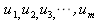
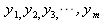
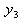
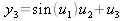
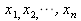
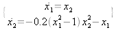

The input of each module is named , and according to the number of input signals, the input variables are named . When writing the formula for the module, you use the variable names u1, u2, u3, etc.
The output of each module is named , and according to the number of input signals, the input variables are named . When writing the formula for the module, you use the variable names y1, y2, y3, etc. For example, if the output  of a module is related to its input signals as , then you enter the formula as: y3 = sin(u1) * u2 + u3
The state of a dynamic module is named , and according to the order of the dynamic module, the state variables are named . When writing the formula for the module, you use the state variable names x1, x2, x3, etc. For example, for the Van der Pol equation 
the 1st State Equation is : f1 = x2.
The 2nd State Equation is: f2 = -0.2*(x1 ** 2 – 1) * x2 ** 2 – x1
The order of a Dynamic module may be different from its inputer number or output number.
|
Name |
Symbol |
|---|---|
|
addition |
+ |
|
subtraction |
- |
|
multiply |
* |
|
divide |
/ |
|
power |
** |
|
AND |
& |
|
OR |
| |
|
XOR |
^ |
abs, acos, asin, atan, atan2, cbrt, ceil, copySign, cos, cosh, exp, expm1, floor, getExponent, hypot, IEEEremainder, log, log10, log1p, max, min, nextAfter, nextUp, pow, rint, round, signum, sin, sinh, sqrt, tan, tanh, toDegrees, toRadians, ulp
On the usages of the above functions, please refer to the Math class documentation.
usage: , where
represents the half width of the dead zone, and
is the variable of the function.
usage: , where
is the slope of the linear part of the function,
is the limit of the linear part, and
is the variable of the function.
2008-5-8